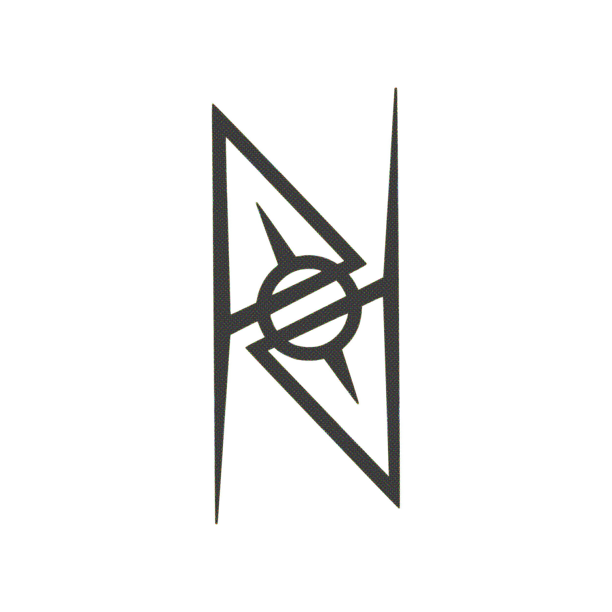

PAANPA
<a href="https://paanpa.bandcamp.com/album/l-pelk-t-hti">Älä pelkää tähtiä by Paanpa</a>
<a href="https://paanpa.bandcamp.com/album/aaltoja">Aaltoja by Paanpa</a>
<a href="https://paanpa.bandcamp.com/album/paanpan-aika-kirjat-hitit-ja-missit-2009-2011">Paanpan aika_kirjat - hitit ja missit 2009-2011 by Paanpa</a>
<a href="https://paanpa.bandcamp.com/album/jimmy-ei-asu-en-t-ll-single">Jimmy ei asu enää täällä -single by Paanpa</a>
<a href="https://paanpa.bandcamp.com/album/ihmisen-ja-koneen-v-lisest-yst-vyydest-remix-2015">Ihmisen ja koneen välisestä ystävyydestä (remix 2015) by Paanpa</a>
<a href="https://paanpa.bandcamp.com/album/l-tule-meit-vastaan-ep-demo-2009">Älä tule meitä vastaan EP (demo 2009) by Paanpa</a>
<a href="https://paanpa.bandcamp.com/album/avaruuspukuinen-mies">Avaruuspukuinen mies by Paanpa</a>
<a href="https://paanpa.bandcamp.com/album/ihmisen-ja-koneen-v-lisest-yst-vyydest-2">Ihmisen ja koneen välisestä ystävyydestä by Paanpa</a>